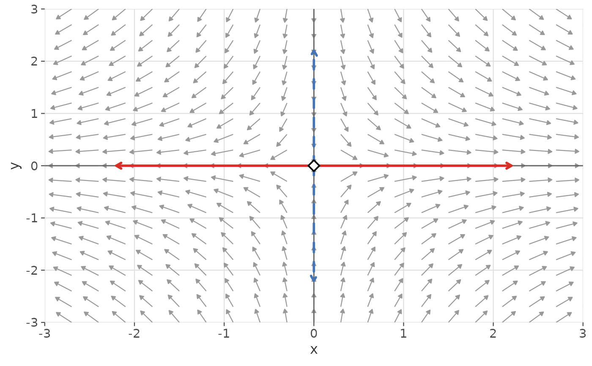
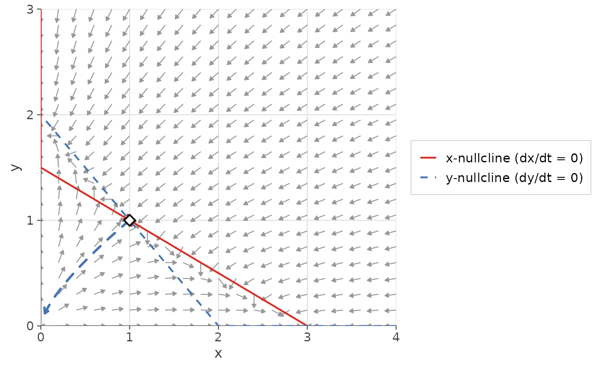

Computes and draws the stable and/or unstable manifolds of a saddle
point for a two-dimensional autonomous ODE system. Returns a list of
ggplot2 layer objects that can be added to a phase plane plot with +.
Usage
gg_manifolds(
deriv,
equilibrium,
parameters = NULL,
eq_classified = NULL,
draw_stable = TRUE,
draw_unstable = TRUE,
t_manifold = 10,
t_steps = 500L,
epsilon = 1e-04,
method = "lsoda",
stable_color = "#4575b4",
unstable_color = "#d73027",
linewidth = 1,
stable_linetype = "dashed",
unstable_linetype = "solid",
add_arrows = TRUE,
arrow_size = 0.35,
add_legend = FALSE,
h = 1e-06
)Arguments
- deriv
A function describing the 2D ODE system, in Convention A or B. See ggphasr for details.
- equilibrium
Numeric vector of length 2 giving the saddle point coordinates. Typically obtained from
find_equilibrium().- parameters
Parameter vector or list passed to
deriv.- eq_classified
A data frame returned by
classify_equilibrium(), orNULL(default). When supplied, the Jacobian is read from this object rather than recomputed.- draw_stable
Logical. Whether to draw the stable manifold. Default:
TRUE.- draw_unstable
Logical. Whether to draw the unstable manifold. Default:
TRUE.- t_manifold
Numeric. Integration time for each manifold branch. Default:
10.- t_steps
Integer. Number of integration steps per branch. Default:
500.- epsilon
Numeric. Distance from the saddle to the seed points. Default:
1e-4.- method
Character. deSolve integration method. Default:
"lsoda".- stable_color
Character. Color of the stable manifold. Default:
"#4575b4"(blue).- unstable_color
Character. Color of the unstable manifold. Default:
"#d73027"(red).- linewidth
Numeric. Line width for both manifolds. Default:
1.- stable_linetype
Character or integer. Line type for the stable manifold. Default:
"dashed".- unstable_linetype
Character or integer. Line type for the unstable manifold. Default:
"solid".- add_arrows
Logical. Whether to add direction arrows. Default:
TRUE.- arrow_size
Numeric. Arrow head size in lines. Default:
0.35.- add_legend
Logical. Whether to add a legend. Default:
FALSE. Note: settingTRUEaddsscale_color_manual()andscale_linetype_manual()layers, which will conflict if the parent plot already has color or linetype scales.- h
Numeric. Finite-difference step for Jacobian. Default:
1e-6.
Value
A list of ggplot2 layer objects. Add to a ggplot with +.
Returns an empty list (invisibly) with a warning if the equilibrium
is not a saddle point.
Details
The manifolds are computed by:
Finding the eigenvectors of the Jacobian at the saddle point.
Placing seed points at distance
epsilonfrom the saddle along each eigenvector (both + and - directions, giving four seeds total).Integrating forward from the two unstable seeds to trace the unstable manifold.
Integrating backward from the two stable seeds to trace the stable manifold.
If a classify_equilibrium() result is supplied via
eq_classified, its Jacobian entries are reused to avoid redundant
computation. Otherwise the Jacobian is computed internally via finite
differences.
Examples
# Saddle at the origin of example_08: dx/dt = x, dy/dt = -y
gg_flow_field(ode_example_08,
xlim = c(-3, 3), ylim = c(-3, 3)) +
gg_manifolds(ode_example_08, equilibrium = c(0, 0))

# Full workflow: find, classify, then draw manifolds
eq <- find_equilibrium(ode_example_11, y0 = c(0.8, 0.8))
eq_cl <- classify_equilibrium(ode_example_11, equilibrium = eq[[1L]])
gg_flow_field(ode_example_11,
xlim = c(0, 4), ylim = c(0, 3)) +
gg_nullclines(ode_example_11, xlim = c(0, 4), ylim = c(0, 3)) +
gg_manifolds(ode_example_11,
equilibrium = eq[[1L]],
eq_classified = eq_cl,
t_manifold = 5)
#> DLSODA- Warning..Internal T (=R1) and H (=R2) are
#> such that in the machine, T + H = T on the next step
#> (H = step size). Solver will continue anyway.
#> In above message, R1 = -3.96058, R2 = -1.90518e-16
#>
#> DLSODA- Warning..Internal T (=R1) and H (=R2) are
#> such that in the machine, T + H = T on the next step
#> (H = step size). Solver will continue anyway.
#> In above message, R1 = -3.96058, R2 = -1.90518e-16
#>
#> DLSODA- Warning..Internal T (=R1) and H (=R2) are
#> such that in the machine, T + H = T on the next step
#> (H = step size). Solver will continue anyway.
#> In above message, R1 = -3.96058, R2 = -1.90518e-16
#>
#> DLSODA- Warning..Internal T (=R1) and H (=R2) are
#> such that in the machine, T + H = T on the next step
#> (H = step size). Solver will continue anyway.
#> In above message, R1 = -3.96058, R2 = -1.52334e-16
#>
#> DLSODA- Warning..Internal T (=R1) and H (=R2) are
#> such that in the machine, T + H = T on the next step
#> (H = step size). Solver will continue anyway.
#> In above message, R1 = -3.96058, R2 = -1.52334e-16
#>
#> DLSODA- Warning..Internal T (=R1) and H (=R2) are
#> such that in the machine, T + H = T on the next step
#> (H = step size). Solver will continue anyway.
#> In above message, R1 = -3.96058, R2 = -1.26208e-16
#>
#> DLSODA- Warning..Internal T (=R1) and H (=R2) are
#> such that in the machine, T + H = T on the next step
#> (H = step size). Solver will continue anyway.
#> In above message, R1 = -3.96058, R2 = -1.26208e-16
#>
#> DLSODA- Warning..Internal T (=R1) and H (=R2) are
#> such that in the machine, T + H = T on the next step
#> (H = step size). Solver will continue anyway.
#> In above message, R1 = -3.96058, R2 = -1.26208e-16
#>
#> DLSODA- Warning..Internal T (=R1) and H (=R2) are
#> such that in the machine, T + H = T on the next step
#> (H = step size). Solver will continue anyway.
#> In above message, R1 = -3.96058, R2 = -1.00913e-16
#>
#> DLSODA- Warning..Internal T (=R1) and H (=R2) are
#> such that in the machine, T + H = T on the next step
#> (H = step size). Solver will continue anyway.
#> In above message, R1 = -3.96058, R2 = -1.00913e-16
#>
#> DLSODA- Above warning has been issued I1 times.
#> It will not be issued again for this problem.
#> In above message, I1 = 10
#>
#> DLSODA- At T (=R1), too much accuracy requested
#> for precision of machine.. See TOLSF (=R2)
#> In above message, R1 = -3.96058, R2 = nan
#>
